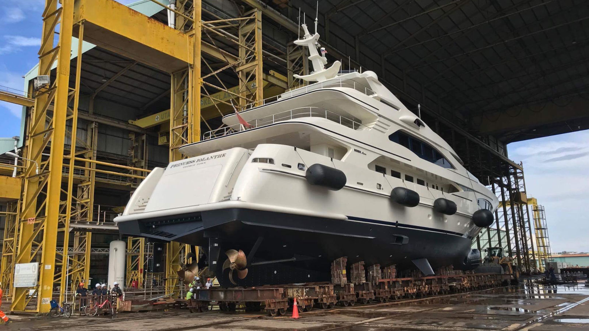
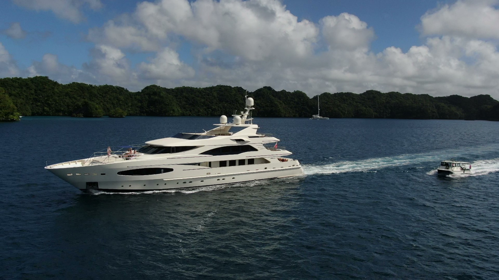

Survey & Yard Periods
Structured support during survey preparation, yard periods, and return-to-service planning.

Zenith Solutions Limited provides tailored yacht management alongside dedicated support for visiting yachts operating throughout the Philippines. Combining structured management services with detailed local knowledge, we help owners, captains, and crew operate efficiently, safely, and confidently across one of the world’s most rewarding and complex cruising regions.

Zenith Solutions delivers experienced management and support for high-quality yachts.
Zenith Solutions Limited provides yacht management built on real operational experience. Our approach is deliberately practical, focused on supporting yachts, owners, and crew with dependable solutions across technical oversight, operational coordination, crew administration, and compliance support.
Alongside management, we offer dedicated support for visiting yachts operating in the Philippines. With extensive experience across Subic Bay, Palawan, Coron, El Nido, Cebu, and the Visayas, we bring a detailed understanding of cruising grounds, anchorages, local logistics, and operating conditions.
This regional expertise includes practical familiarity with key dive regions such as the Thresher Sharks of Malapascua, the wrecks of Coron, and the reefs of Apo and Tubbataha. Combined with international standards and a clear, hands-on approach, this allows us to deliver support that works reliably both on paper and in practice.
Zenith Solutions offers a dual service approach: full superyacht management for owners and vessels requiring structured operational oversight, and dedicated Philippine support for visiting yachts needing reliable local coordination, logistics, and itinerary planning.
Our management services are designed for owners and yachts seeking practical, high-standard support across technical, operational, crew, and compliance matters.
Maintenance oversight, refit coordination, contractor management, and technical planning to keep yachts operationally ready and properly supported.
Day-to-day operational oversight, crew logistics, onboard standards, and practical management support tailored to the needs of each yacht and program.
Documentation support, certification tracking, regulatory coordination, and administrative management delivered with a clear and dependable approach.
For visiting yachts, we provide local knowledge and practical support throughout the Philippines, helping captains, owners, and crew operate efficiently and confidently.
Custom route planning built around local cruising knowledge, guest preferences, seasonal conditions, and operational realities across the Philippines.
Provisioning, fuel coordination, clearances, transport, local sourcing, and practical support to keep visiting yachts running smoothly.
Local guidance for anchorages, destinations, and specialist guest experiences, including dive-focused itineraries and access to trusted local dive professionals.
We support yacht operations across the Philippines, from Subic Bay through to Palawan, Coron, El Nido, Cebu, Siargao, and the wider Visayas. Our experience covers both established cruising grounds and more remote locations, with a detailed understanding of anchorages, local conditions, and logistical realities.
This includes practical familiarity with key dive regions such as the Thresher Sharks of Malapascua, the wrecks of Coron, and the reefs of Apo and Tubbataha, allowing us to support well-structured itineraries and guest experiences with genuine local knowledge.
For enquiries regarding superyacht operations, itineraries, logistics, or regional support in the Philippines, please contact:
Captain Allen Sutton
All enquiries are handled with discretion and professionalism.